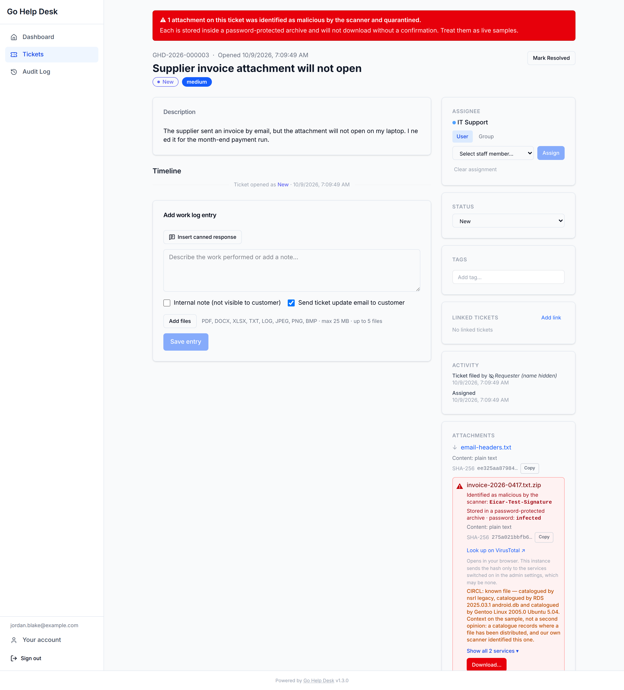
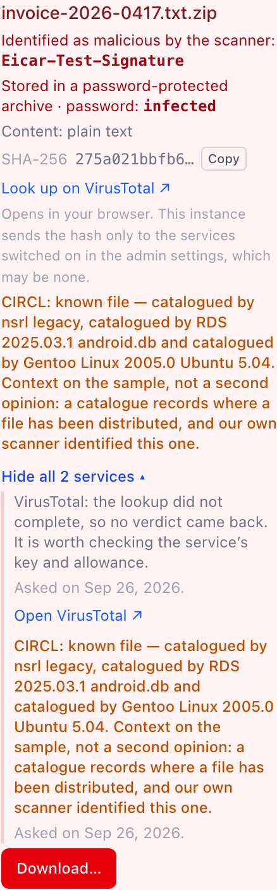

Attachment Security Beta
What the server does with a file somebody uploads to a ticket — and, just as important, what it does not do.
Everything on this page is new in v1.3.0-beta and is not in a released version. The current stable release is v1.2.0. There is no 1.3.0 tag and no 1.3.0 release. Names, defaults and responses described here can still change before 1.3.0 ships. Run this on a deployment you are willing to treat as a beta.
Up to and including 1.2.0, an attachment was checked in one way: a hard-coded signature test against the file's extension, which had no entry for .txt or .log and ended by accepting anything it had no entry for. 1.3.0-beta replaces that with three separate things, which are worth keeping apart in your head because they answer different questions:
- Detection — what the bytes actually are, recorded on every file, never a reason to refuse one.
- Containment — whether a file the server has reason to distrust is turned away or stored wrapped in an archive. Two operator settings, both defaulting to "turn it away".
- Reputation — asking outside services what they already know about a quarantined file's hash. Off by default, at all four services.
What happens to an upload, in order
Every step below runs on POST /api/v1/tickets/{id}/attachments, in this order. The first one that refuses ends it — nothing is written to disk and nothing is recorded.
- Is the caller allowed? Uploading needs a signed-in account. A reporting user may upload only to their own ticket.
- Is it within 25 MB? Checked three times — the request body is capped before it is parsed, then the size the upload declares is checked, then the bytes actually read. Over that is
413 too_largewhichever check catches it. - Is the filename storable, and honest? It must be valid UTF-8, contain no NUL byte, contain no control character and no text-direction override (the characters that make
invoice<U+202E>txt.pdfdisplay asinvoicefdp.txt), and be 255 bytes or shorter. Anything else is400 invalid_filename. - Is the extension one this instance accepts? Checked against the operator's allowed-types list, before the file body is read. Anything else is
415 unsupported_type. - What are the bytes? The content detector and the SHA-256 both run here, on the file exactly as uploaded.
- What does the scanner say? ClamAV, subject to the scan policy. An unscannable upload under the default policy is
503 scanner_unavailablewith aRetry-After. - Which tier is it stored in? Quarantine, mismatch wrap, image recompression, or as-is. See the three tiers.
The allowed-types list is now an operator setting, not a list in the source. It stopped being a security boundary when every download became an opaque blob: nothing is rendered, so what the list decides is which files this deployment is willing to hold — a policy choice. An IT team triaging a reported .exe has a real reason to accept one. See Admin Guide: Attachments.
What is recorded about every upload
Three facts are written on every file this instance stores, whatever the settings say. They are facts about what arrived, not enforcement.
| Field | Type | What it is |
|---|---|---|
| detected_mime | string | What the content detector made of the bytes, as a bare media type — text/html, never text/html; charset=utf-8. Content it cannot place at all is recorded as application/octet-stream. |
| sha256 | string | Hex SHA-256 of the bytes as uploaded. |
| mismatch | bool or null | Whether the content contradicted the extension the file arrived under. null means no judgement was made — see below. |
Both are taken on the bytes as uploaded — before an image is recompressed, before a wrap puts the file inside an archive — because they answer one question: what did this person actually send. The consequence is worth stating plainly: for a recompressed image, the recorded hash is not the hash of the file on disk. For everything else the two are the same.
The detector reads a prefix of the file rather than the whole thing, so it is confident about formats that declare themselves in their first bytes and it is not a parser. A file that is a valid one thing and a usable other thing is beyond it.
Three states, and they are different
- A detected type and a verdict — this file was inspected and judged.
- A detected type and no verdict (
mismatch: null) — inspected, but not judged, because the claimed extension is one the operator added rather than one this project ships. See below. - Nothing at all — the file predates this release. Nobody looked. Nothing is backfilled and nothing is re-scanned, and the ticket UI renders this as an absence rather than as a finding.
When content contradicts the name
A content mismatch is the detector's extension for the format differing from the one the file claimed. Three rules relax that comparison, and no others:
.jpegand.jpgare one extension. The only synonym, because the two spellings name a single format. The allowed-types list applies the same rule, so allowing either allows both.- A text extension matches any content that is inert text. The text extensions are
.txt,.log,.csvand.md. "Inert text" is decided by asking the detector, not by a list — any type whose ancestry passes throughtext/plain. That coverstext/*and also JSON, NDJSON, GeoJSON, SVG, XHTML and SubRip, which the media-type registry files elsewhere.text/htmlis included: a file callednotes.logopens in a text editor whatever is inside it, and nothing here renders an attachment. It does not cover a ZIP or anything packaged inside one. Note that only.txtand.logare among the nine shipped extensions: a file named.csvor.md, on an instance that added those, gets a detected type and no verdict at all, for the reason given below. - Unidentifiable content under a text extension is not a mismatch. One stray NUL byte from a process that died mid-write, or UTF-16 with no byte-order mark, is enough to defeat the detector, and that is the detector's limit rather than evidence of deception. Under a name claiming a binary format it stays a mismatch: a PDF that cannot be identified as a PDF is worth a sentence.
A text extension is not a blanket pass. A rotated log compressed in place and still called .log detects as application/gzip, which is not inert text, so it is flagged — and, being text-named, it is stored under its own name rather than wrapped or refused.
A mismatch never refuses an upload on its own. Recording one and acting on one are separate decisions; the second belongs to the operator and is tier 2.
Only the nine extensions this project ships are judged
Each of .pdf, .docx, .xlsx, .txt, .log, .jpg, .jpeg, .png and .bmp was checked against the detector, so a contradiction under one of those names is one the server can stand behind. An extension you add yourself is neither flagged nor contained.
The reason is spelling, not laziness. The detector reports one canonical extension per format: .htm is HTML and .tif is TIFF, but it calls them .html and .tiff. An operator who allowed .htm and received genuine HTML would otherwise be refused with a message saying the content did not match the name — which would be false. Such a file is stored under its own name, with the detected type recorded and no verdict, which reads as "we looked and could not judge".
The practical consequence, stated because it is a real trade: an instance that has allowed .xml and receives an XHTML document carrying a script under the name report.xml stores it under that name, and a browser opening it from disk will run the script. If you want containment for a type, that type has to be one of the nine.
The three storage tiers
Wrapping and recompression are alternatives, not steps — a wrapped file is an archive, so recompressing one would mean handing a ZIP to the JPEG encoder. The upload handler takes the first of these that applies.
Tier 1 — the scanner identified it
Applies when ClamAV returned a detection and attachment_infected_handling is set to quarantine. The sample is wrapped in a ZIP with the published password infected and stored under the uploaded name plus .zip: sample.exe becomes sample.exe.zip, so nothing downstream double-clicks an executable. The scanner's name for the detection is stored on the row.
Under the default, refuse, an infected upload is rejected with 422 infected and never reaches this tier.
Tier 2 — the content contradicts the name
Applies when all of the following are true:
- the content mismatches the claimed extension, and
- the claimed extension is one of the nine shipped ones, and
- the claimed extension is not a text extension, and
- the type the file turned out to be is not on the operator's allowed-types list, and
attachment_mismatch_handlingis set towrap.
The file is then wrapped with no password and stored as suspicious-<crc32>.zip — the CRC32 of the file inside, which every ZIP entry already carries, so the archive is named after a value its recipient can verify.
Under the default, refuse, the upload is rejected with 415 invalid_file — the same status, code and message 1.2.0 refused with — and never reaches this tier.
Tier 3 — it is an image
.jpg, .jpeg, .png or .bmp, and neither of the above applied. The image is decoded and re-encoded as both JPEG (quality 85) and PNG, and whichever is smaller is stored, under the name it was uploaded with. An image with any transparency in it is always stored as PNG, because JPEG has no alpha channel and "smaller" would be comparing two different pictures.
An image is refused with 422 invalid_image if it cannot be decoded, or if decoding it would cost too much memory. That second check reads the header only, before any decode, because the allocation is the attack — and it is a budget rather than one number. The header may declare at most 25 megapixels, and the decoded picture may take at most 100 MB, worked out from the pixel count and the colour depth: a 16-bit RGBA PNG costs eight bytes a pixel, not four, so 26 megapixels of it is 210 MB. A JPEG is asked directly, from its own frame header, because its decoder can need four to six times what the pixel count suggests — progressive and CMYK files especially — and a JPEG whose header cannot be read is refused rather than estimated. At most four images are decoded at once across the whole process, so several uploads each inside the budget cannot add up past it.
Anything else is stored exactly as it arrived.
Which mismatches are wrapped, and which are only flagged
This is the part people get wrong. Not every mismatch is wrapped. The judgement is the operator's own allowed-types list — a file is contained when the type it turned out to be is not a type this instance accepts.
| Upload | Default instance | With wrap set |
|---|---|---|
HTML inside a .pdf | 415, refused | Stored as suspicious-<crc32>.zip, flagged |
A real PNG inside a .pdf | Stored under its own name, flagged | Stored under its own name, flagged |
A .log holding a captured HTML response | Stored, not flagged | Stored, not flagged |
A gzipped file still called .log | Stored under its own name, flagged | Stored under its own name, flagged |
Genuine HTML called report.htm, on an instance that allowed .htm | Stored under its own name, no verdict | Stored under its own name, no verdict |
A file named as text never reaches tier 2 under either setting. Wrapping contains a file by taking away the name that decides how it opens; crash.log already opens in a text editor whatever is inside it, so there is nothing to contain — only something to say.
The two containment settings are independent, because the claims are different. "The scanner named this file" and "the content is not what the name says" are not the same fact. A file that is both is quarantined, and the mismatch is an extra line on the row rather than a replacement for the malware warning.
What the row says afterwards
mime_type describes the file as stored; detected_mime describes the bytes that arrived; size_bytes is the stored file, because that is what a download costs.
| Stored name | mime_type | detected_mime | |
|---|---|---|---|
| Ordinary PDF | report.pdf | application/pdf | application/pdf |
| PNG recompressed to JPEG | shot.png | image/jpeg | image/png |
HTML named .pdf, under wrap | suspicious-4f2a91c3.zip | application/zip | text/html |
Infected .exe, quarantined | sample.exe.zip | application/zip | application/vnd.microsoft.portable-executable |
Neither tier is retroactive in either direction. Turning quarantine or the wrap on does not rewrap what is already stored, and turning either off does not unwrap it.
The quarantine archive, and why its password is published
A quarantined sample is stored inside a ZIP encrypted with the password infected. That password is in this page, in the admin settings screen, and beside every quarantined file on the ticket. It protects nothing, and it is not meant to.
It has exactly two jobs:
- The stored bytes are not directly double-clickable.
- An on-access antivirus — on the help desk's own storage, or on the machine of whoever downloads it — does not eat the sample out from under the ticket a day later.
infected is the long-standing convention for moving malware samples, so an analyst's tooling already knows what to do with it. The encryption is ZipCrypto rather than AES for the same reason: weak is fine when the password is public, and an AES-256 ZIP is opaque to Windows Explorer and macOS Archive Utility, which is precisely the friction this is meant to remove. Do not read any of this as confidentiality.
The sample keeps its own name inside the archive, so unwrapping produces the file the ticket is about rather than the wrapper's name. The .zip is appended after the allowed-types list has had its say on the uploaded name, so .zip does not have to be an accepted type for quarantine to work.
The second tier's archive carries no password, deliberately. A mismatched file is not known-bad; the server could not identify it, which is a different claim. It is undouble-clickable either way, and blinding the recipient's own antivirus over a wrong extension would be the wrong trade.
What staff see
A ticket holding quarantined attachments carries a persistent red banner naming how many there are. Each quarantined row shows the scanner's name for the detection, the archive password, the detected type, the SHA-256 with a copy control, and a Download… button that opens a confirmation dialog rather than a link. The download URL is deliberately not on the row: a link that calls preventDefault is still reachable by middle-click, "Save link as" and the keyboard context menu, and a button is not.

Downloads are downloads. Nothing is ever rendered
There is no attachment previewer, and there will not be one. No lightbox, no thumbnail, no inline PDF viewer, no <img> pointing at the download route. Every link to an attachment downloads it.
Rendering attachment content on the help desk's own origin would make every uploaded file a candidate for stealing a staff session, and the defence would become a content sanitiser that has to be right forever. The case that makes this load-bearing is PDF: application/pdf opens in the browser's built-in viewer, and those viewers run JavaScript.
Three things hold it, all of them tested:
| Header | What it does | |
|---|---|---|
| Content-Type | always | application/octet-stream on every attachment, whatever the file claims to be. No browser renders that. Before 1.3.0-beta the type came from the filename, so a PDF went out as application/pdf. |
| Content-Disposition | always | attachment, carrying the original filename in both RFC 6266 forms, so an accented name survives. |
| Sec-Fetch-Dest | checked | The download route refuses a request whose Sec-Fetch-Dest says the browser intends to render the response — 403 not_downloadable. Only document, empty and an absent header are allowed. The response also carries Vary: Sec-Fetch-Dest, so a browser cache cannot answer a rendering request out of an allowed one. |
Two limits, stated because they are easy to forget:
- An absent header is allowed. Command-line clients send nothing, and so do browsers older than Chrome 80, Firefox 90 and Safari 16.4. For those clients this check does not apply. Refusing an absent header would break every one of them, which is worse.
- Page script can fetch the bytes itself and render them without asking again. That arrives as
Sec-Fetch-Dest: empty, which has to be allowed because an<a download>click sends it too, and the server cannot tell the two apart. What stops that is not writing such code; a frontend test catches the obvious shapes of the mistake at review time, and it is not a control.
The site logo is the one exception, and the only upload this application renders inline. 1.3.0-beta removed SVG from that uploader: PNG, JPEG and GIF are accepted and all re-encoded as PNG, and the logo route keeps its own sandboxing policy on top. An SVG left on disk by an older release is no longer served. See Admin Guide: Branding.
Reputation lookup Beta
A quarantined sample's SHA-256 can be looked up at third-party reputation services. All four are off by default, and all four off is a supported configuration rather than a broken one: it means attachments are judged by this instance's own scanner alone.
The four services
| Service | Key | What it answers | Allowance enforced |
|---|---|---|---|
| VirusTotal | required | How many engines flagged the file, out of how many that ran. The broadest answer of the four. | 500 a day and 4 a minute — VirusTotal's own published free-tier figures. |
| MetaDefender (OPSWAT) | required | A smaller engine set. It can also answer that it knows a hash — scanned privately — but holds no verdict for it, which is the unscanned state below. |
4,000 a day. This figure is ours, not theirs — OPSWAT publish only "a limited number of API calls per day", so this is a courtesy cap. |
| PolySwarm | required | Engine detections, plus an answer VirusTotal and MetaDefender cannot give: that a file is a known binary vouched for by a named vendor feed. It can also answer unscanned for a file it holds but has no verdict on. |
60 an hour — PolySwarm's own published figure. They publish no daily figure, so none is enforced. |
| CIRCL (hashlookup) | none | A catalogue, not a scanner. It answers only whether a hash set it re-publishes holds this file — known, naming the set, or unseen. It can never say clean, detected or unscanned. |
300 an hour. This figure is ours, not theirs — CIRCL publish no ceiling of any kind. It is a politeness cap on a free best-effort service run by a CERT. |
Daily counters reset at 00:00 UTC and hourly ones on the hour. The counters are held in memory, per process, and are deliberately not persisted: they are a courtesy cap, not an accounting record. The budgets are per service, so an exhausted VirusTotal allowance does not stop CIRCL answering.
CIRCL has no API key setting at all, and the absence is the decision: hashlookup authenticates nobody, so there is no key an operator could supply. Enabling any of the other three without a key is refused at save time with invalid_reputation_config, naming the service that lacks one — "enabled and silently doing nothing" is not a state you can reach.
What leaves the server, and what does not
- What leaves: a 64-character hexadecimal SHA-256, sent to each enabled service, for quarantined attachments only.
- What does not leave: the file. Nothing here ever uploads one. A hash lookup tells a service that somebody has seen a file they already hold; submitting the file hands them a customer's document, which is a different feature with different terms attached and is deliberately not built.
- What else does not leave: the filename, the ticket, the reporter, or any other attachment. An ordinary attachment — content matching its name, scanner passed — is never looked up, so its hash never leaves the server at all.
CIRCL is a disclosure of a different kind. It records the caller's IP address and User-Agent, and its public instance serves a leaderboard of the most-queried hashes, with filenames. VirusTotal and OPSWAT log but do not publish. If you enable CIRCL, hash reputation data comes from CIRCL hashlookup, Computer Incident Response Center Luxembourg, CC-BY-4.0.
When a lookup happens
- Only for quarantined files. A file the scanner named. Not ordinary attachments, and not files that were merely flagged as mislabelled.
- Only for staff. A reporting customer opening their own ticket never spends the operator's allowance.
- Lazily, on a page render — when staff open a ticket carrying a quarantined attachment with no current verdict. Never at upload. There is no background queue, because this project has no background job runner and a queue would be a table nothing drains.
- Cached against the hash and the service, not the attachment, so the same file on five tickets costs one lookup per service. Each service's verdict has its own expiry clock.
The verdicts
A service can tell the server one of five things, plus failure:
| State | Meaning | |
|---|---|---|
| detected | At least one engine flagged it. | |
| unseen | The service has no record of this hash at all. Not a verdict, and not reassurance. | |
| unscanned | The service knows the hash but holds no verdict for it. | |
| clean | The lookup completed and no engine flagged the file. Only ever reachable from a completed lookup. | |
| known | A named feed has this exact hash in its catalogue. The file is not scanned at all; the answer comes from the hash match. | |
| unavailable | No answer: unreachable, timed out, rate-limited, budget spent, key rejected. Never rendered as clean. |
Where more than one service is enabled, the row shows the single most serious answer, named after the service that gave it, and one click shows them all:
detected > unseen > unscanned > clean > knownTwo of those orderings are not obvious. unseen outranks clean because only quarantined files are looked up, so every hash here is one ClamAV already called malicious — a file no service has ever seen is a novel sample, which is more concerning than one seventy engines examined and passed. known is the floor because it is the only positive claim in the set; everything above it is some flavour of "no findings".
unavailable is not in the ordering at all. It is a failed lookup rather than a verdict and must never displace a real answer, so VirusTotal timing out while CIRCL says known reads known. It is the summary only when nothing answered, and it is always listed against its own service, because an operator needs to see their key failing.
known is not "known good"
known is the only positive claim in the set, and the state name deliberately stops short of vouching for the file. How much the claim is worth depends entirely on which feed is speaking: PolySwarm's microsoft_windows feed asserts the file is signed and trusted, while an NSRL catalogue entry means only that the file appeared in a known software distribution — and NSRL catalogues hacking tools. So the UI always names the feed: "known file, signed by Microsoft Windows" and "known file, catalogued by NSRL" are not the same sentence. PolySwarm and CIRCL are the two services that produce it.
On the ticket page it is not rendered as reassurance, and that is deliberate. Only files the local scanner already identified are ever looked up, so a catalogue hit sits directly under the detection, the password and the download confirmation. The line is shown in the same amber as the other non-clean answers and says what it is: context on the sample — a catalogue records where a file has been distributed — and not a second opinion on the scanner's verdict. EICAR is in NSRL.
Nothing a third party says moves a file out of quarantine. The detection, the password and the download confirmation are unaffected by any verdict on this page.
Expiry and re-checking
attachment_reputation_refresh decides how old a stored verdict may be before the next page render fetches it again: weekly, biweekly (the default), monthly, quarterly or never. A verdict decays — new signatures catch old malware, and the sample nobody had submitted when you asked is precisely the one submitted a week later.
Two verdicts never expire: a detection, because engines do not un-flag a file, and a known file, because a hash does not fall out of a vendor catalogue. Re-confirming either would spend an allowance to learn nothing.
Staff get a Check again control on a verdict that can still change. The server allows one manual re-check per hash per service every seven days, whatever the interval says — including when it says never, because an operator who turned automatic checking off to save quota did not mean that nobody may ever ask. It is a floor and not an override: the daily budget still applies, a re-check inside the week is refused with the date it clears, and a re-check of a final verdict is refused outright. The control is disabled rather than hidden while the week runs.

No provider can hold a page open
The whole of one HTTP request's reputation work shares a five-second budget — not five seconds each. Lookups run one after another, so without a shared bound three quarantined attachments and two unreachable services would be six timeouts and a response the server can no longer write. What the budget covers is the outbound calls and nothing else: a verdict already in the cache is still served after the time is gone, because a hung service must not erase answers already held.
A link is not a lookup
Some attachment rows carry a Look up on VirusTotal link beside the hash. That link does not follow the reputation toggles, and it is not on every attachment. Two separate rules, and both matter.
It does not follow the toggles. A lookup is this server sending a customer's file hash to a third party — the operator's decision, their allowance, and what the toggles govern. A link sends nothing from the server: it is an anchor the analyst clicks in their own browser, under their own account or none, exactly as if they had copied the hash off the page and pasted it themselves, which they can do anyway because the hash is right there with a copy control. Switching VirusTotal off means "do not send my customers' hashes to VirusTotal from my server". It does not mean "my staff may never look at VirusTotal".
It is not on every attachment. A link goes only where this instance itself found something worth a second opinion: the scanner named the file, or its content contradicts the name it arrived under. An ordinary attachment carries the hash and no link, because a link and a line of explanatory text under every holiday-request PDF is the noise that teaches people to stop reading the rows that matter.
The link is VirusTotal specifically because its page is the one every analyst already knows: no account needed, and the complete report renders logged out. MetaDefender's public page announces itself as a reduced view, and CIRCL has no per-hash web page at all. Each enabled service's own link sits next to its own verdict in the expanded view instead.
What this does not do
Every item here is a deliberate limit, not a gap waiting to be filled.
- Nothing is uploaded to anybody. Only a hash is sent, and only for quarantined files.
- No key means no lookup at all. The page renders, the hash and the link are still there, and no request is made.
- A failed lookup is never "clean". A lookup that failed, timed out, was rate-limited or ran out of daily budget renders as not checked. "Clean" is reachable only from a completed lookup that came back with no detections, and an unavailable answer is never written to the cache.
- A stale verdict that could not be re-checked stays on screen rather than disappearing. "Clean, and here is when the service last analysed it" is worth more to a reader than "not checked yet".
- Nothing is re-scanned locally. The ClamAV verdict is recorded when the file arrives and is never revisited. A file that was clean last month and would be recognised today still reads as it did on the day it was uploaded. The reputation lookup is the only part of this that expires.
- Old attachments carry none of this. No detected type, no hash, no mismatch answer. Nothing is backfilled.
- Detection reads a prefix, not the whole file, and is not a parser. A file that is a valid one thing and a usable other thing is beyond it. Content it cannot place at all is recorded as unidentified, which counts as a contradiction under a name claiming a binary format — and not under a text name, where it is the detector's limit rather than evidence of anything.
- The allowed-types list is not a security boundary. It decides what this deployment is willing to hold, nothing more.
- An extension you add yourself is neither flagged nor contained — see above.
- Containment is not retroactive. Turning quarantine or the wrap on does not rewrap what is already stored; turning either off does not unwrap it.
- The quarantine password is not confidentiality. It is published, and ZipCrypto is weak on purpose.
- The Sec-Fetch-Dest check cannot reach everything. Absent headers are allowed, and same-origin page script can fetch the bytes and render them itself. Nothing on the server can tell that apart from a download.
- The expanded reputation list does not mark which line the row's summary came from. The summary names its service, and the API sends an
inlineflag on the matching entry, but the ticket page does not draw it yet — tracked as issue #173. - There is no admin screen for scanner health yet.
GET /api/v1/admin/security-warningsreports what scanning is actually doing, including a live reachability check rather than a restatement of the configuration — but the admin UI renders only the insecure-secrets warning from that response. Today this is visible to an administrator who asks the API.
The settings behind all of this
Every one of these lives under Admin → Settings → Attachments, and every one is session-gated: an API key or OAuth client cannot change them, because they decide what this instance will hold and where customers' file hashes go. The full reference, with defaults and what changes when you change each one, is in the Admin Guide.
| Setting | Default | What it decides |
|---|---|---|
| attachment_allowed_types | 9 extensions | What this instance will accept at all. |
| attachment_scan_policy | required* | What an unscannable upload means. |
| attachment_scan_address | unset | Overrides CLAMAV_ADDR. |
| attachment_infected_handling | refuse | Refuse an identified file, or quarantine it. |
| attachment_mismatch_handling | refuse | Refuse a mislabelled file, or wrap it. |
| attachment_reputation_*_enabled | false | Whether each of the four services is asked. |
| attachment_reputation_*_key | unset | Write-only API key, per service. CIRCL has none. |
| attachment_reputation_refresh | biweekly | How long a non-final verdict is trusted. |
* required where a scanner address is configured, off where none is.